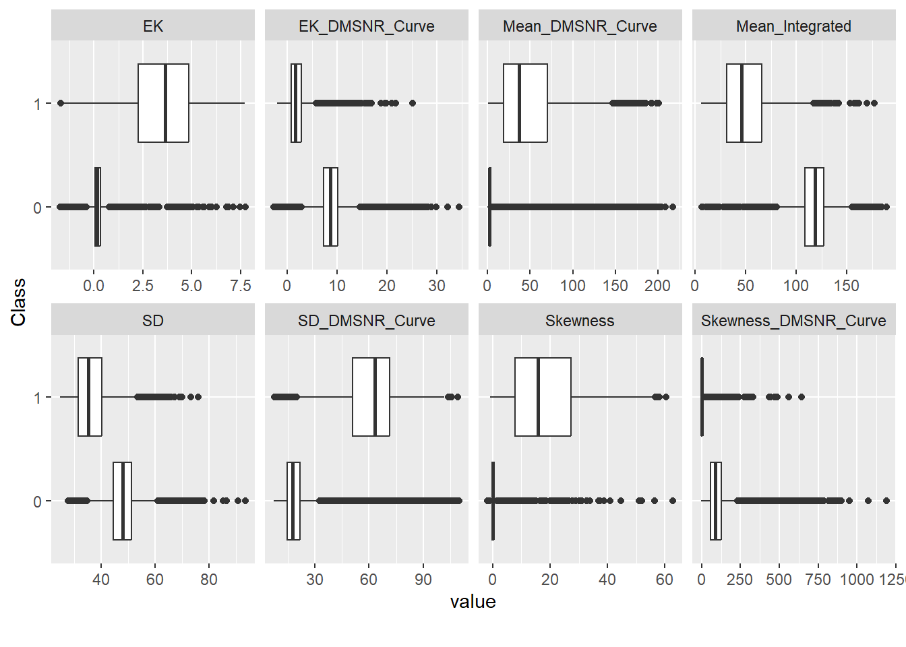

library(data.table)
library(tidyverse)
library(magrittr)
library(here) # avoid having to change between . and .. when running interactively vs knitting
library(DataExplorer)
library(tidymodels)EDA
Setup
df_train <- fread(here("Data/train.csv"))
load(here("Output/01_data_split.RData"))Use only training data for the EDA
df_train <- training(data_split)Introduction to data
We will start with a high-level introduction to data:
str(df_train)Classes 'data.table' and 'data.frame': 94051 obs. of 10 variables:
$ id : int 1 2 3 4 5 6 7 10 13 14 ...
$ Mean_Integrated : num 87.1 112.6 120.7 134.1 131.6 ...
$ SD : num 36.3 39.8 45.9 57.7 52.6 ...
$ EK : num 0.4355 0.3796 -0.0985 -0.1078 -0.0753 ...
$ Skewness : num 2.2661 0.9223 0.0118 -0.5733 -0.4958 ...
$ Mean_DMSNR_Curve : num 3.42 2.73 2.7 1.11 2.19 ...
$ SD_DMSNR_Curve : num 21.9 15.7 21 11.3 15.5 ...
$ EK_DMSNR_Curve : num 7.04 8.19 8.18 16.11 9.03 ...
$ Skewness_DMSNR_Curve: num 52.7 85.6 70.3 308.8 97 ...
$ Class : Factor w/ 2 levels "0","1": 1 1 1 1 1 1 1 1 1 1 ...
- attr(*, ".internal.selfref")=<externalptr> df_train %>%
plot_missing()A very straight forward data set. Fortunately, no missing values.
Marginal Distributions
summary(df_train) id Mean_Integrated SD EK
Min. : 1 Min. : 6.055 Min. :24.78 Min. :-1.73078
1st Qu.: 29399 1st Qu.:104.578 1st Qu.:43.46 1st Qu.: 0.04988
Median : 58817 Median :116.727 Median :47.48 Median : 0.18581
Mean : 58775 Mean :111.288 Mean :46.72 Mean : 0.50149
3rd Qu.: 88153 3rd Qu.:126.297 3rd Qu.:50.86 3rd Qu.: 0.39508
Max. :117563 Max. :189.367 Max. :93.60 Max. : 7.75249
Skewness Mean_DMSNR_Curve SD_DMSNR_Curve EK_DMSNR_Curve
Min. :-1.7919 Min. : 0.2132 Min. : 7.37 Min. :-2.598
1st Qu.:-0.1889 1st Qu.: 2.0911 1st Qu.: 14.96 1st Qu.: 6.745
Median : 0.0913 Median : 2.8018 Median : 18.16 Median : 8.445
Mean : 1.8707 Mean : 11.9502 Mean : 26.18 Mean : 8.035
3rd Qu.: 0.6911 3rd Qu.: 4.1162 3rd Qu.: 24.71 3rd Qu.:10.001
Max. :62.8146 Max. :217.3712 Max. :109.89 Max. :34.540
Skewness_DMSNR_Curve Class
Min. : -1.977 0:85322
1st Qu.: 49.524 1: 8729
Median : 83.527
Mean : 93.745
3rd Qu.: 122.092
Max. :1191.001 Are all variables within their appropriate range, or are there faulty observations? Hard to say, since very limitied information is given about the data, so let’s just go with it.
df_train %>%
select(!id) %>%
plot_histogram(ncol = 3)Some fairly heavy-tailed distributions; transformations might be a good idea.
df_train %>%
select(!id) %>%
plot_histogram(
ncol = 3,
scale_x = "log10"
)Warning in self$trans$transform(x): NaNs producedWarning: Transformation introduced infinite values in continuous x-axis
Distributions by target:
df_train %>%
select(!id) %>%
plot_boxplot(by = "Class")
plot_bar(df_train)Imbalanced data.
Correlation
df_train %>%
select(!id) %>%
plot_correlation()Correlation is not a big problem when we are only concerned with prediction and not inference. Otherwise, some VIF analysis would be in order it seems.
Take Aways and To Do
- Imbalanced data: we need to account for that
- Some predictors are very heavy-tailed: log transform
- Normalize predictors after transformation